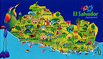

El Salvador es un país muy rico en cultura, parte de ella es su gastronomía,en la cual podemos disfrutar de muchos platillos y bebidas muy deliciosas.


|
El Salvador es un país muy rico en cultura, parte de ella es su gastronomía,en la cual podemos disfrutar de muchos platillos y bebidas muy deliciosas. |
 | |
|
||